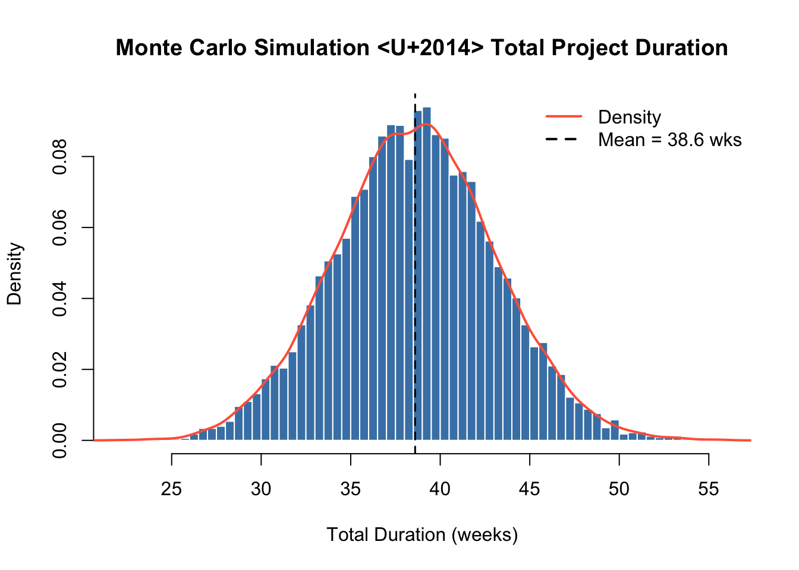
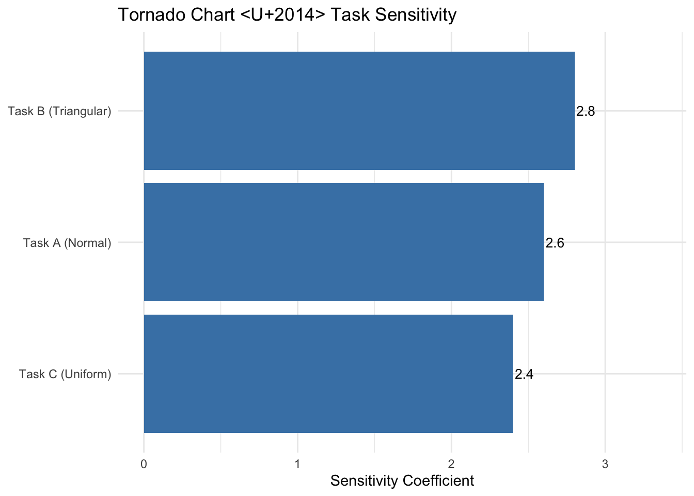

library(PRA)
set.seed(42)2 Go Monte or Go Home: Monte Carlo Simulation
“Anyone who considers arithmetical methods of producing random digits is, of course, in a state of sin.” — John von Neumann
Here is the core insight behind Monte Carlo simulation: instead of guessing a single answer, roll the dice thousands of times and let the distribution speak for itself. The method was named after the famous casino in Monaco — not because it involves gambling, but because it involves random sampling. If you can describe your uncertainty with a probability distribution, Monte Carlo can turn that uncertainty into a full picture of possible project outcomes.
And unlike the casino, the odds are in your favor.
2.1 How Monte Carlo Simulation Works
Monte Carlo (MC) simulation is a quantitative risk analysis technique that models uncertainty by running thousands of simulated project outcomes. Instead of using single-point estimates for task durations or costs, each task is described by a probability distribution. The simulation draws random samples from these distributions, sums them to get a total outcome, and repeats this thousands of times to build a full picture of possible project results (Vose 2008).
NoteThe Five Steps of Monte Carlo Simulation
- Model Definition — Define project tasks and the variables that drive uncertainty (durations, costs).
- Assign Distributions — Choose a probability distribution for each uncertain variable (e.g., triangular for tasks with optimistic/likely/pessimistic estimates).
- Specify Correlations — If tasks are related (e.g., both affected by a shared risk), set a correlation coefficient between them.
- Run Simulation — Draw random samples and compute the total outcome for each iteration (typically 10,000+).
- Analyze Results — Summarize the distribution of totals using percentiles, mean, and variance.
2.2 Example
We model a 3-task project (in weeks). Task A follows a normal distribution, Task B has a triangular distribution (optimistic/most-likely/pessimistic), and Task C is uniformly distributed.
num_simulations <- 10000
task_distributions <- list(
list(type = "normal", mean = 10, sd = 2), # Task A
list(type = "triangular", a = 5, b = 10, c = 15), # Task B
list(type = "uniform", min = 8, max = 12) # Task C
)2.2.1 Correlation Matrix
Tasks often move together due to shared resources or external risks. The correlation matrix captures this. Values range from −1 (perfectly opposed) to +1 (perfectly aligned); 0 means independent. Here Tasks A and B have moderate positive correlation (0.5), meaning delays in one tend to coincide with delays in the other.
correlation_matrix <- matrix(c(
1.0, 0.5, 0.3,
0.5, 1.0, 0.4,
0.3, 0.4, 1.0
), nrow = 3, byrow = TRUE)2.2.2 Run the Simulation
results <- mcs(num_simulations, task_distributions, correlation_matrix)cat("Mean Total Duration: ", round(results$total_mean, 2), "weeks\n")Mean Total Duration: 38.6 weekscat("Variance of Duration: ", round(results$total_variance, 2), "\n")Variance of Duration: 20.01 cat("Std Dev of Duration: ", round(results$total_sd, 2), "weeks\n")Std Dev of Duration: 4.47 weeks2.2.3 Distribution of Outcomes
The histogram below shows all 10,000 simulated total durations. The overlaid density curve reveals the shape of the distribution — notice the slight right skew from the triangular task.
hist_data <- results$total_distribution
hist(hist_data,
breaks = 50, freq = FALSE,
main = "Monte Carlo Simulation — Total Project Duration",
xlab = "Total Duration (weeks)", col = "steelblue", border = "white"
)
lines(density(hist_data), col = "tomato", lwd = 2)
abline(v = results$total_mean, col = "black", lty = 2, lwd = 1.5)
legend("topright",
legend = c("Density", paste0("Mean = ", round(results$total_mean, 1), " wks")),
col = c("tomato", "black"), lty = c(1, 2), lwd = 2, bty = "n"
)
2.3 Interpreting Percentiles
The mcs() function returns key percentiles of the total distribution. These answer the question: “What duration has X% probability of not being exceeded?”
knitr::kable(
data.frame(
Percentile = c("P5", "P50 (Median)", "P95"),
Duration = round(results$percentiles, 1),
Meaning = c(
"5% chance of finishing this fast or faster",
"Equal chance of finishing above or below this",
"95% chance of finishing by this date"
)
),
caption = "Simulation Percentiles"
)| Percentile | Duration | Meaning | |
|---|---|---|---|
| 5% | P5 | 31.2 | 5% chance of finishing this fast or faster |
| 50% | P50 (Median) | 38.6 | Equal chance of finishing above or below this |
| 95% | P95 | 46.0 | 95% chance of finishing by this date |
The P50 is your base estimate — the median, not the mean (though for symmetric distributions they’re close). The P95 is the date you can be 95% confident in. The gap between P50 and P95 is your schedule risk.
2.4 Contingency Analysis
Contingency is the buffer added above the base estimate to cover uncertainty. A common approach is to use the difference between the P95 (or chosen confidence level) outcome and the P50 (base estimate) (Project Management Institute 2021).
contingency_val <- contingency(results, phigh = 0.95, pbase = 0.50)
cat("Schedule contingency (P95 − P50):", round(contingency_val, 2), "weeks\n")Schedule contingency (P95 <U+2212> P50): 7.4 weekscat(
"There is a 95% chance the project will finish within",
round(results$percentiles["95%"], 1), "weeks.\n"
)There is a 95% chance the project will finish within 46 weeks.Adding this contingency to the P50 estimate gives a 95% confidence of on-time delivery. Teams with low risk tolerance should use P95; those with higher tolerance might use P80.
2.5 Sensitivity Analysis
Sensitivity analysis identifies which tasks drive the most variability in the total outcome — the tasks that deserve the most management attention. The result is a tornado chart: the wider the bar, the bigger the impact on total schedule risk.
sensitivity_results <- sensitivity(task_distributions, correlation_matrix)
sens_data <- data.frame(
Task = c("Task A (Normal)", "Task B (Triangular)", "Task C (Uniform)"),
Sensitivity = sensitivity_results
)
p <- ggplot2::ggplot(
sens_data,
ggplot2::aes(x = Sensitivity, y = reorder(Task, Sensitivity))
) +
ggplot2::geom_col(fill = "steelblue") +
ggplot2::geom_text(ggplot2::aes(label = round(Sensitivity, 3)),
hjust = -0.1, size = 3.5
) +
ggplot2::labs(
title = "Tornado Chart — Task Sensitivity",
x = "Sensitivity Coefficient",
y = NULL
) +
ggplot2::xlim(0, max(sensitivity_results) * 1.2) +
ggplot2::theme_minimal()
print(p)
Tasks with larger bars contribute more variance to the total. Prioritize risk mitigation efforts on the highest-sensitivity task. Even a small reduction in its uncertainty can meaningfully reduce overall project risk.
2.6 Summary
For early-stage estimates when full distributions are unavailable, the Second Moment Method (Chapter 4) provides a fast analytical alternative using only means and variances.
2.7 Exercises
Conceptual check. What does increasing the number of simulations from 10,000 to 100,000 do to the result? Does it change the mean? The P95? The smoothness of the histogram? Try it.
New task. Add a 4th task with a Beta distribution (hint: look at
?mcsto see if Beta is supported, or use a normal approximation). Runmcs()with your updated task list and compare the P80 to the 3-task version. Did the project get riskier or safer?Correlation experiment. Re-run the simulation with all off-diagonal correlation values set to 0 (fully independent tasks). Then re-run with all off-diagonal values set to 0.9 (strongly correlated). How does total variance change in each case? Explain intuitively why strong positive correlation increases portfolio risk. ★
Choosing a confidence level. Your client asks for a “90% confident” delivery date. What percentile do you use, and what contingency does that imply? Recalculate using
contingency(results, phigh = 0.90, pbase = 0.50).Real-world application. ★ Think of a project you know. Identify three tasks with significant uncertainty. Estimate (or guess) a distribution type and rough parameters for each. Run
mcs()and report the P50 and P80 schedule. What’s the contingency at P80?